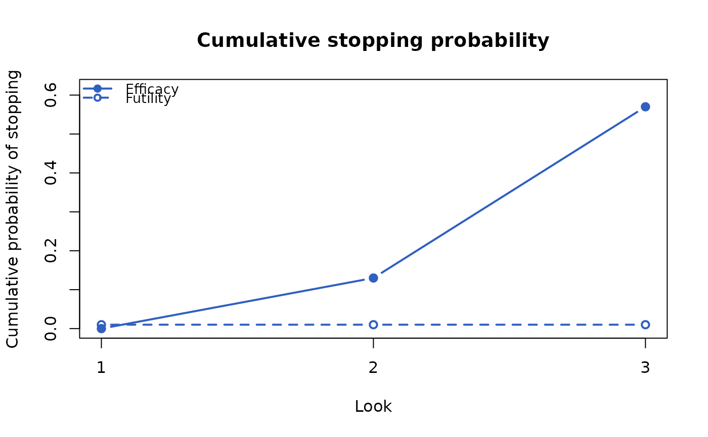
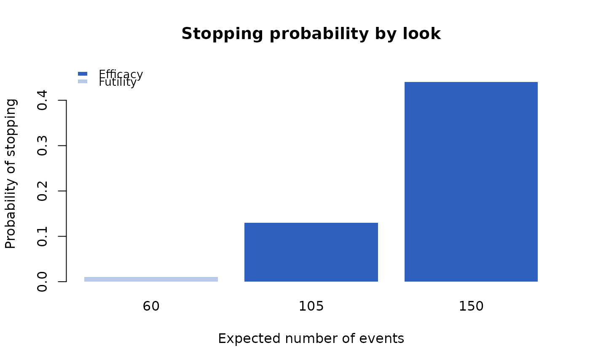

Plot Method for Sequential Analysis Summaries
Source:R/plot.simsummary_fast.R
plot.simsummary_fast.RdDraws the stopping probabilities of a simsummary_fast result
by look. With what = "cumulative" (default) one panel shows, for
every block (arm or population), the cumulative probability of stopping
for efficacy, which at the final look is the rejection rate, and, when
futility boundaries were applied, the cumulative probability of stopping
for futility. With what = "stage" each block has a panel of stacked
bars of the probabilities of stopping for efficacy and for futility at each
look.
Arguments
- x
An object of class
"simsummary_fast"fromsimsummary_fast.- what
"cumulative"(default) for the cumulative stopping probabilities of all blocks in one panel, or"stage"for the stopping probabilities at each look, one panel per block.- xaxis
The horizontal axis:
"look"(default),"events", or"time". See Details.- col
Colors of the blocks, recycled. Defaults to a qualitative palette.
- ylim
Limits of the vertical axis. Defaults to the range from 0 to slightly above the largest probability drawn.
- legend_pos
Keyword giving the legend position, passed to
legend.- xlab, ylab, main
Axis labels and title. Defaults depend on
whatandxaxis; withwhat = "stage"and several blocks, the panels are titled by their blocks.- ...
Further arguments, currently ignored.
Details
The plot uses the look rows of each block, which must keep all the looks of
the design in their original order: a selection of rows or columns that the
print method prints as an ordinary data frame (see
print.simsummary_fast) gives an error. The cumulative
probability of stopping for futility is the cumulative sum of
prob.stop.futility over the looks.
The looks are placed on the horizontal axis by their index
(xaxis = "look"), by the expected number of events at the look
("events", the column n.event.mean), or by the expected
calendar time of the look ("time", the column cutoff.mean).
Examples
df <- simdata_fast(
nsim = 200,
n = c(150, 150),
a.time = c(0, 12),
a.rate = 300 / 12,
e.hazard = list(0.05, 0.035),
seed = 1
)
res <- analysis_fast(df, control = 1, event.looks = c(60, 105, 150),
stat = c("logrank", "coxph"), side = 1)
oc <- simsummary_fast(res,
eff.col = "logrank.z",
efficacy = c(NA, -2.96, -1.97),
fut.col = "cox.coef",
futility = c(log(1.2), NA, NA),
direction = "lower")
plot(oc)

plot(oc, what = "stage", xaxis = "events")
